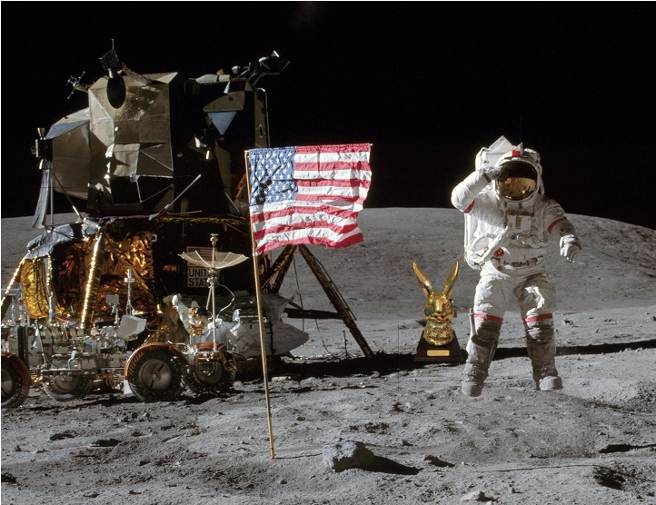
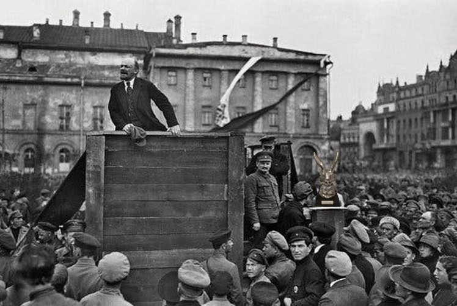
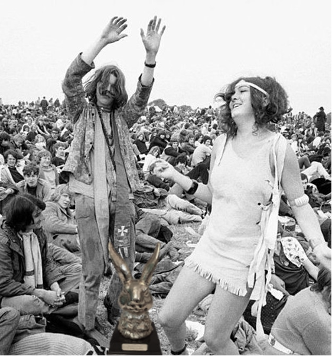
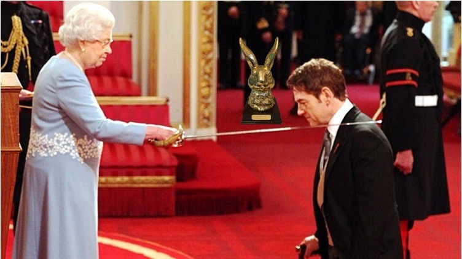

THE BUNNY THROUGHOUT HISTORY
Elizabeth Wright
What was the Bunny up to before it became part of the family?
The Bunny at the first moon landing in 1969
The Bunny during the Russian revolution. Fun fact: the Bunny was also photoshopped out of this picture by Stalin along with Trotsky.
The Bunny during its 'hippie phase’ in the 70s
And finally, the Bunny waiting in line to be knighted by Her Majesty the Queen